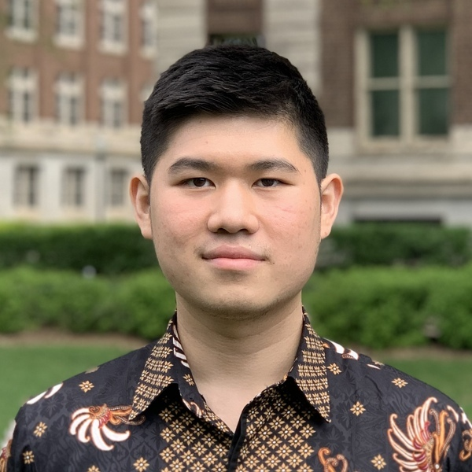

 Hi, I'm Jason. I love to design, build, and operate machine learning systems that solve real world problems. Currently, I work as an AI/ML engineer with over 3 years of industry experience across three companies—two in the tech sector and one in real estate. My work has primarily focused on applying large language models (LLMs) to extract structured data from unstructured sources such as text, images, and documents. I've also developed customer service chatbots aimed at improving user experience and operational efficiency. I earned my Bachelor of Science in Statistics from the University of Minnesota in 2022, with minors in Computer Science and Mathematics. Check out my blog where I share my thoughts and lessons learned from working in ML and AI.